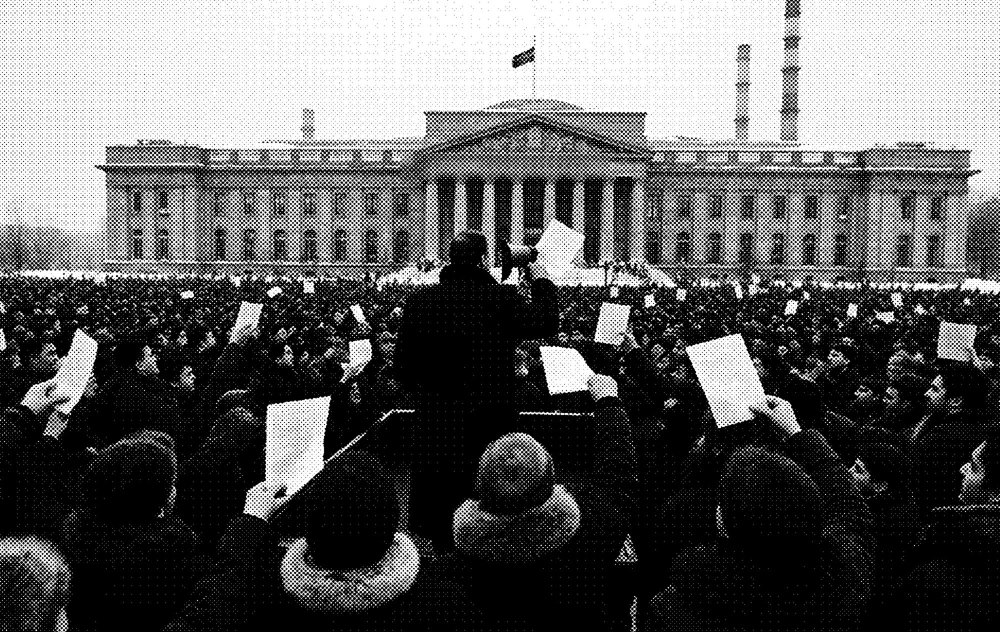

NURZHAN, SUNDAY. Copies of the drafts are handed out to the crowd in Refinery Square after Erlan Toktarov read passages aloud from a truck and called them “a bill of sale for our country.”
Yesterday afternoon in Nurzhan, Erlan Toktarov stood on the back of a truck in Refinery Square and read to a crowd of several thousand from a stack of papers he called “a bill of sale for our country.” Copies were handed out until they ran out. The Times has obtained a complete set and prints them today, in full, on pages 2 to 15.
We have compared our copy, page by page, with the sheets distributed in Nurzhan. They match. The documents are a framework treaty and three protocols, one with each neighbouring state, together with four annexes. They are typed in English and Russian, marked “draft” and “for consultation,” and several pages carry handwritten amendments. None is signed.
Under the framework treaty the National Assembly would vote to dissolve the Democratic Republic of Irad, eleven weeks after it was proclaimed. Kyrgyzstan, Uzbekistan and Kazakhstan, none of which has recognised the Republic, would each recognise it “solely for the purpose of signature” of the treaty itself.
A map with three colours
The protocols draw new borders. Kyrgyzstan would receive the Talas valley, including the capital, and the Chatkal, Toktogul and Naryn lands next to its Jalal-Abad region. Uzbekistan would receive the Fergana rim. Kazakhstan would receive the northern steppe and the lower Chu with Nurzhan itself, the city where the documents were read aloud yesterday.
Payments to the Republic would be made in instalments into escrow accounts outside Irad. The sums are left blank. Annex C lists companies that would receive shares in the Chu oil fields, the eastern antimony deposits and the company that operates the Toktogul dam. Several of them are among the companies that won the cabinet’s auctions this winter, which this newspaper has reported since December.
Nowhere in the 214 pages is there any provision for a vote of the people of Irad, of the clans whose pastures make up most of the land to be transferred, or of the National Assembly beyond the single vote to dissolve.
“Contingency papers”
The office of Prime Minister Bakyt Orozbekov said last night that the documents were “unapproved contingency drafts” prepared by officials “to understand our neighbours’ positions,” and that “some pages may have been altered.” It did not say which pages, and it did not deny that the meetings described in the drafts had taken place. The foreign ministries of the three neighbouring states could not be reached.
Mr. Toktarov, who until last week sat in the leadership of the Democratic Party of Irad, proclaimed a special economic zone from Nurzhan and declared the independence ruling annulled. In Talas, groups gathered at the Assembly building after nightfall. Police did not intervene.
Readers will find the texts on the following pages exactly as we received them, with the handwritten amendments marked. We have printed nothing else on those pages.
Reactions, page 16